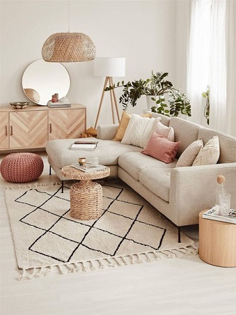
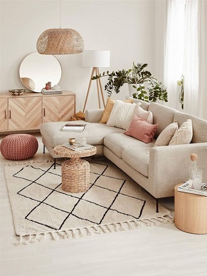

¿Porqué es importante la decoración de nuestro hogar?
La decoración de cada espacio de nuestro hogar implica la elección de los diferentes elementos de mobiliario y accesorios que formarán parte de él, usando la creatividad para aportar valor estético al aspecto final de un lugar interior o exterior; eligiendo los colores, texturas y accesorios de iluminacion mas adecuados según el estilo de cada hogar, asegurandose de que todos los elementos antes mencionados combinen entre si. El ornamiento es muy importante entonces, porque da vida a los espacios y crea ambientes utilizando recursos estéticos, y en especial plasmando personalidad en el diseño.
 
